<!-- fixedMenu.html -->
<div class="fixedMenu">
	<div class="menuBar" id="mainMenuBar">
	<div class="logo"><a href="index.php"></a>
	</div>
	<div class="menuContent">
		<ul>
			<!-- <li><h1>PINEY WOODS</h1></li> -->
			<li><a href="editHomePageForm.php">Home</a></li>
			<li><a href="editAboutPageForm.php">About Us</a></li>
			<li><a href="editPictures.php?id=gallery">Gallery</a></li>
			<li><a href="listings.php">Listings</a></li>
			<li><a href="editContactPageForm.php">Contact Us</a></li>
		</ul>
	</div>

</div>
</div>
<!-- Set div to height of menubar keep spacing -->
<div id="menuSpacer"></div>

<div class="spacerTiny"></div>
<h2 class="centerText"><a href="/">Return to main site</a></h2>
<p class="centerText"><a href="logout.php">Log Out</a></p>

<script type="text/javascript">
function colorImage(x, s){
	x.src=s;
}
</script>